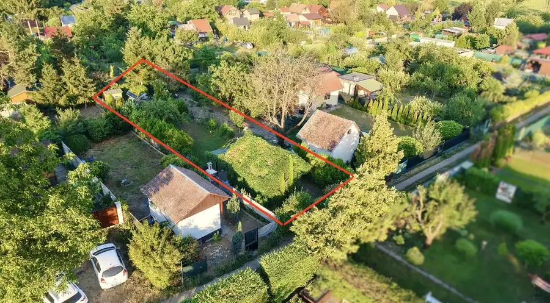
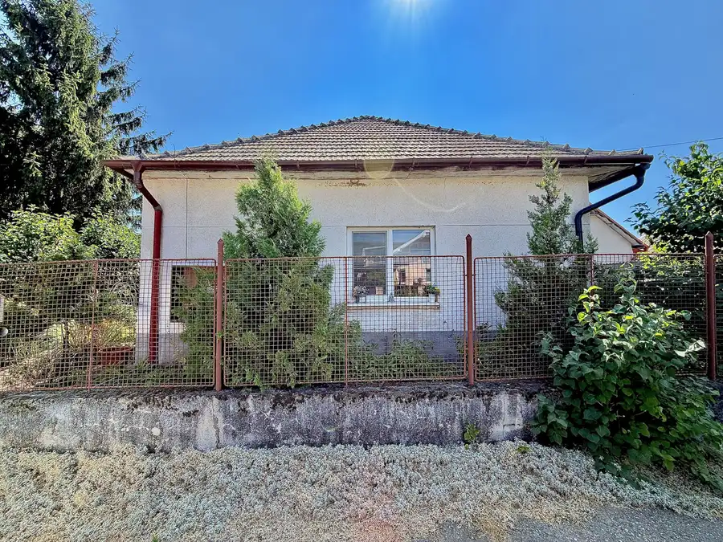
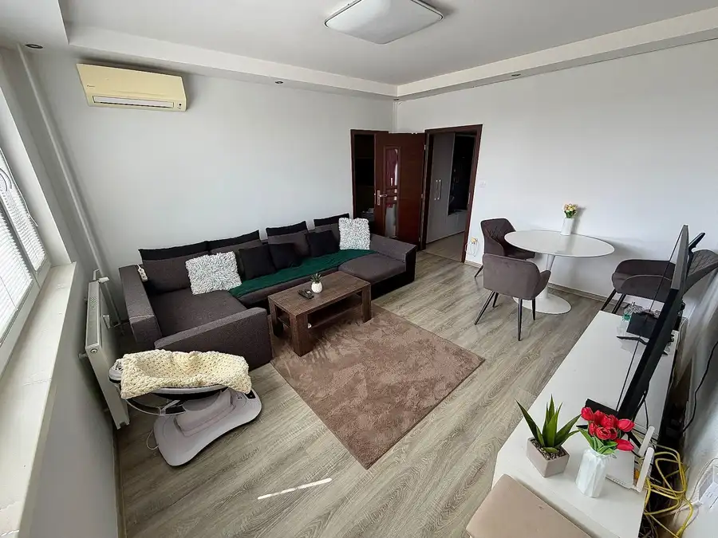

Budova obchodu a služieb v centre Nových Zámkov
Nové Zámky
- Poschodie0.
- Stavčiastočne prerobený
- Vlastníctvoosobné
O nehnuteľnosti
Realitná kancelária MOLNÁR reality s. r. o. Vám ponúka na predaj budovu obchodu a služieb nachádzajúcu sa priamo v centre mesta Nové Zámky. Nehnuteľnosť predstavuje zaujímavú príležitosť pre podnikateľské účely, obchodné aktivity, poskytovanie služieb, prípadne ako investičná nehnuteľnosť s možnosťou prispôsobenia priestorov podľa potrieb budúceho vlastníka.
Budova bola postavená v roku 1993 z pálenej tehly. Nehnuteľnosť je napojená na kompletnú občiansku vybavenosť a všetky inžinierske siete – verejný vodovod, elektrickú energiu, plyn a kanalizáciu. Vykurovanie objektu je zabezpečené plynovým vykurovaním prostredníctvom radiátorov. Veľkou výhodou objektu je jeho kompletné podpivničenie, ktoré poskytuje ďalší úložný, skladový alebo prevádzkový priestor. Na prízemí sa nachádza keramická dlažba, zatiaľ čo podlahu na poschodí tvorí drevená palubovka. Objekt je vybavený dvoma klimatizačnými jednotkami, ktoré zabezpečujú komfortnú teplotu počas letných mesiacov. Poschodie disponuje samostatným vstupom, čo umožňuje jeho nezávislé využívanie od priestorov na prízemí. Vďaka dispozičnému riešeniu a celkovej výmere ponúka nehnuteľnosť široké možnosti využitia. Strecha objektu je riešená lepenkovou šindľovou krytinou.
VÝMERA:
- Úžitková plocha prízemia: 78 m²
- Úžitková plocha pivnice: 78 m²
- Úžitková plocha poschodia: 58 m²
- Celková úžitková plocha: 214 m²
PREVÁDZKOVÉ NÁKLADY: Orientačné mesačné náklady pri prevádzke objektu predstavujú:
- elektrická energia: približne 130€
- plyn: približne 180€
- voda: približne 40€
POLOHA:
Nehnuteľnosť sa nachádza priamo v centre mesta Nové Zámky, čo predstavuje významnú výhodu z hľadiska dostupnosti, viditeľnosti a občianskej vybavenosti. Centrálna poloha poskytuje výbornú dostupnosť pre klientov, zákazníkov aj zamestnancov a zároveň ponúka široké možnosti využitia objektu na obchodné, administratívne alebo službové účely.
Cena nehnuteľnosti: 203 000€
V CENE NEHNUTEĽNOSTI JE ZAHRNUTÝ:
* kompletný právny servis,
* kompletný realitný servis vrátane provízie,
* zabezpečenie všetkých potrebných písomností,
* vypracovanie rezervačnej zmluvy, zmluvy o budúcej zmluve a kúpnej zmluvy,
* autorizácia zmlúv a zabezpečenie poplatkov spojených s prevodom vlastníckych práv na kataster,
* prepis energií,
* realitný a právny FULL servis,
* spolupráca so všetkými finančnými inštitúciami,
* bezplatná ponuka financovania prostredníctvom hypotekárneho úveru,
* zabezpečenie znaleckého posudku,
* zabezpečenie potvrdení pre dedičské konanie.
Bližšie informácie o nehnuteľnosti, možnostiach jej využitia a termíne obhliadky Vám radi poskytneme v našej realitnej kancelárii.
Parametre
| Poschodie | prízemie |
|---|---|
| Vlastníctvo | osobné |
| Stav | čiastočne prerobený |
| Voda | verejný vodovod |
| El. napätie | 230V |
| Plyn | áno |
| Kanalizácia | áno |
| Vykurovanie | vlastné - plyn |
| Pivnica | áno |
| Parkovanie | verejné |
| Inžinierske siete | áno |
| Postavené z | tehla |
| Klimatizácia | áno |
| Okná | plastové |
| Prístupová cesta | asfaltová cesta |
| Dátum zverejnenia | 10. 9. 2026 |
Kde to je
Mohlo by Vás zaujímať

Chaty a chalupy10 40 000 €Murovaná chata v meste Nové Zámky Nové Zámky 16 m² Realitná kancelária MOLNÁR reality s. r. o. ponúka na predaj murovanú rekreačnú chatu, vhodnú na oddych a trávenie voľných chvíľ v obľúbenej chatovej…
Rodinné domy10 89 900 €3 izbový rodinný dom v obci Imeľ Imeľ 3-izbový247 m² MOLNÁR reality s. r. o. Vám ponúka na predaj 3-izbový rodinný dom s veľkým pozemkom stavaný v roku 1975 v obci Imeľ. Rodinný dom sa nachádza na…
Byt10 129 900 €ZNÍŽENÁ CENA! Prerobený 3 izbový byt s loggiou v meste Komárno Komárno 3-izbový61 m²6. podlažie Realitná kancelária MOLNÁR reality s. r. o. ponúka na predaj moderne zrekonštruovaný a kompletne zariadený 3-izbový byt s loggiou vo vyhľadávanej…